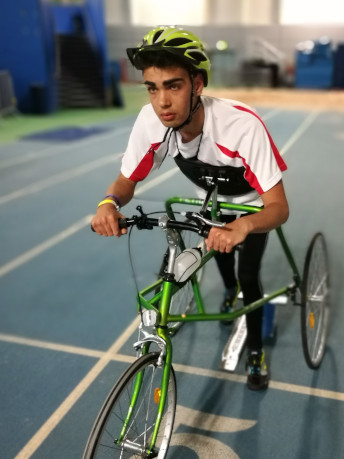

The Boparan Charitable Trust was set up in 2009 to aid children and young people across the nation who are disadvantaged by disability, life limiting conditions or extreme poverty. As a charity we take great pride in taking the time to listen, understand and help families who are often forgotten about or whose needs are not met by the health and social systems. We work directly with families providing financial grants for key items that assist the children. In addition to providing grants for specialist equipment, we also donate money towards therapies. We also work in the community, awarding funds to hospitals, hospices and community organisations. We pride ourselves on being one of the country’s most efficient charities with a turnaround time of 2 – 4 weeks for funding under £5,000. Our streamlined application process means that once fully completed applications are received, they are individually reviewed within a 14-day period by our specialist board and Trustees, allowing us to reach out to those children most in need of our help and support. Every family receives a personalised response from the Trust following the outcome of its review. If you know a child in need of our help or for any further information, please get in touch with our applications team.

I set up the charity several years ago with the aim of helping as many children and young people as possible. We have come a long way and I am proud of the work we have achieved. On behalf of the families we’ve helped, thank you. Your support, commitment and compassion for our charity are very much appreciated.

As a trustee, I have always wanted to do more than just sit behind a desk. I am passionate about the work of the Trust and take pride in being part of the weekly application review panel. Additionally, I have enjoyed playing my part towards fundraising for the Trust, completing the Birmingham Half Marathon, Birmingham 10km, a 100m Abseil and our very first firewalk.

I am both delighted and privileged to be able to accept an invitation to become a Trustee of the Boparan Charitable Trust. There are a considerable number of children and families who have benefited from their prompt response at times of need and crisis and I look forward very much to working with them to promote and expand their scope of work.

The Boparan Charitable Trust offers swift help and support for children and their families at times of crisis. The charity specialises in providing quick and prompt support ensuring that beneficiaries are always at the heart of everything we do. It is heart-warming and heart wrenching in equal measure but provides care and assistance when it is so vitally needed.

I have the privilege of seeing how important our work is in supporting and changing the lives of disadvantaged and disabled children in the UK. We pride ourselves on being there for them at the earliest opportunity, on always being available at the end of the phone.
applications@boparan.com
I look after events and fundraising aspects of our charity. My job is to bring fundraising events to life to ensure we can carry on supporting the children that need our help.
events@boparan.com